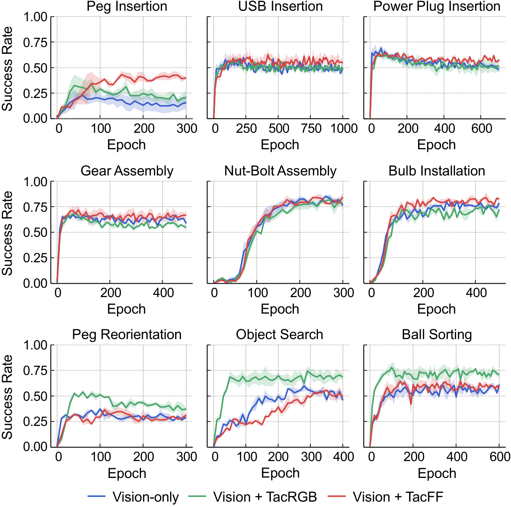
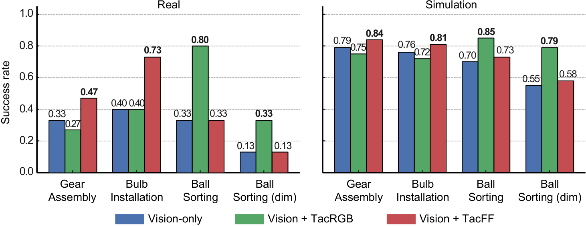

ManiFeel, a reproducible and scalable simulation benchmark for studying supervised visuotactile manipulation policies across a diverse set of tasks and scenarios. ManiFeel presents a comprehensive benchmark suite spanning a diverse set of manipulation tasks, evaluating various policies, input modalities, and tactile representation methods. Through extensive experiments, our analysis reveals key factors that influence supervised visuotactile policy learning, identifies the types of tasks where tactile sensing is most beneficial, and highlights promising directions for future research in visuotactile policy learning. ManiFeel aims to establish a reproducible benchmark for supervised visuotactile policy learning, supporting progress in visuotactile manipulation and perception.
Here we showcase representative successful and failed rollout examples across our benchmark tasks under two visuotactile policy modalities—TacRGB (tactile RGB image input) and TacFF (tactile force-field encoding). The tasks are grouped into three categories: exploration under degraded vision, contact-rich insertion, and dexterous screwing. A ✔ indicates a successful rollout; a ✘ indicates a failure.
Tasks under occluded or low-light visual conditions, where tactile feedback is key to robust manipulation.
Contact-rich assembly and insertion tasks requiring precise force control and tactile perception.
Dexterous rotational manipulation tasks requiring sustained contact and fine motor control.
Table 1: Success rates (mean ± std) averaged over three seeds across tasks and sensing configurations. Best in each column is bold.
| Sensing Configuration |
Insertion | Screwing | Exploration | ||||||
|---|---|---|---|---|---|---|---|---|---|
| Peg Insertion |
USB Insertion |
Power Plug Insertion |
Gear Assembly |
Nut–bolt Assembly |
Bulb Installation |
Peg Reorientation (Occluded) |
Object Search (Occluded) |
Ball Sorting (Dim) |
|
| Vision only | 0.14 ± 0.01 | 0.49 ± 0.03 | 0.51 ± 0.02 | 0.63 ± 0.02 | 0.80 ± 0.03 | 0.76 ± 0.02 | 0.29 ± 0.02 | 0.52 ± 0.04 | 0.57 ± 0.03 |
| Vision + TacRGB | 0.21 ± 0.02 | 0.49 ± 0.02 | 0.51 ± 0.01 | 0.57 ± 0.02 | 0.78 ± 0.03 | 0.72 ± 0.04 | 0.39 ± 0.02 | 0.69 ± 0.01 | 0.72 ± 0.02 |
| Vision + TacFF | 0.40 ± 0.02 | 0.56 ± 0.01 | 0.58 ± 0.02 | 0.66 ± 0.01 | 0.81 ± 0.03 | 0.81 ± 0.02 | 0.28 ± 0.02 | 0.52 ± 0.02 | 0.60 ± 0.02 |

Learning curves comparing the three different sensing configurations (i.e., Vision-only, Vision + TacRGB, and Vision + TacFF) across 9 simulation manipulation tasks. Each plot shows success rates over training epochs.
We transfer policies trained in simulation to a real robot and evaluate them on three tasks: ball sorting under varying lighting, bulb screwing, and gear assembly. We compare TacRGB and TacFF visuotactile policies against a vision-only baseline. A ✔ indicates a successful rollout; a ✘ indicates a failure.
The robot distinguishes a table tennis ball from a golf ball and places each into the correct bowl, tested under normal and dim lighting.
The robot must screw a bulb to a precise torque. TacFF achieves a snug fit; without tactile feedback, the vision-only policy either over-tightens or under-tightens.
The robot assembles a gear onto a shaft, requiring precise contact and force sensing.

Success rates for real and simulated environments across different sensing configurations and scenarios. The overall trends observed in simulation are consistently reproduced in the real world, demonstrating that ManiFeel's task suite captures representative and transferable manipulation behaviors.
We evaluate visuotactile and vision-only policies in a real-world tactile sorting task under human disturbances. The robot must distinguish between two visually similar objects—a table tennis ball and a golf ball—and place them into designated bowls. When a ball is removed mid-rollout, the visuotactile policy detects the loss and actively re-initiates the search, while the vision-only policy fails to respond and cannot recover. We test under both normal and dim lighting conditions.
Go our lab website for more information about our research: Purdue MARS Lab.
@misc{luu2025manifeelbenchmarkingunderstandingvisuotactile,
title = {ManiFeel: Benchmarking and Understanding Visuotactile Manipulation Policy Learning},
author = {Quan Khanh Luu and Pokuang Zhou and Zhengtong Xu and Zhiyuan Zhang and Qiang Qiu and Yu She},
year = {2025},
eprint = {2505.18472},
archivePrefix = {arXiv},
primaryClass = {cs.RO},
url = {https://arxiv.org/abs/2505.18472}
}